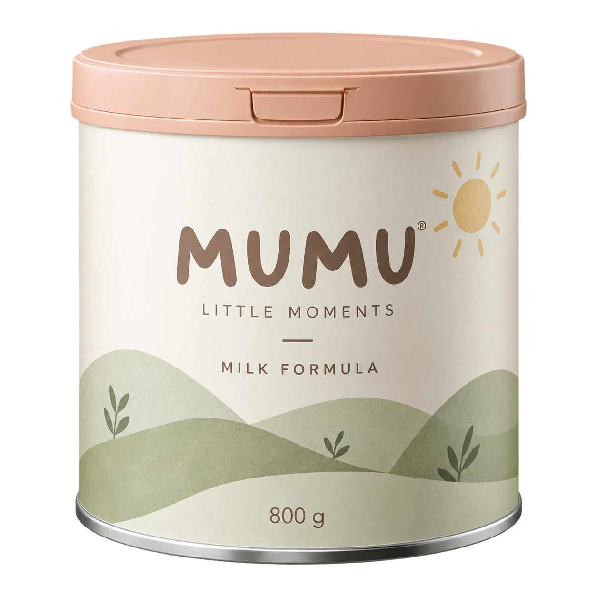

温柔相伴 ✳ 用心设计 ✳ 珍藏每一刻
GROW WITH LOVEMADE FOR LITTLE MOMENTS
小小的你，
大大的爱。
从清晨的第一声咿呀，
到被抱在怀里的每一刻。
把细小的日常，装满温柔的心意。
陪你，收藏成长里的小美好。A LITTLE CARE. A LOT OF LOVE.
HELLO, LITTLE ONE.
慢慢往下，发现更多温柔 ↓

MADE WITH
love
FOR EVERY DAY
MUMU / EVERYDAY COLLECTIONlove
FOR EVERY DAY
01 / THE LITTLE THINGS
长大，是一点一点的。
爱，也是。
我们喜欢那些不起眼的小瞬间：
小手攥住衣角，眼睛追着阳光，睡着时微微翘起的嘴角。
初芽的灵感，就来自这些柔软的日常。
柔和的色彩清晰的包装有温度的细节
KEEP WALKING. KEEP GROWING.
走着走着，
就长大了。
从蹒跚的小步，到从容地向前。
同一个你，一路温柔相伴。
MUMU / GROW WITH ME01 / 婴儿时期
小小的手，抱住第一份温柔
婴儿 → 儿童 → 少女 → 成年
28 秒成长动画 · 幼儿 / 儿童 / 少女 / 成年
A SPOONFUL OF LOVE互动体验 / 01
mumu♡
一勺温柔，准备就绪
POUR → SWIRL → LOVE
创意动效示意，非奶粉冲调步骤。
02 / A GENTLE LITTLE RITUAL
一勺温柔，
融进小小日常。
让节奏慢下来，看粉末轻轻落下，
看奶液泛起柔和的涟漪。
用一点想象，描绘陪伴的形状。
03 / THE EVERYDAY COLLECTION
把这份温柔，带回家。
干净的线条，柔软的色彩。
让日常用品，也成为生活里喜欢的风景。
OUR LITTLE ESSENTIAL
CREAM / APRICOT✳
初芽 · 日常系列
MUMU 奶粉概念款
献给每一份笨拙又认真的爱。
奶油白的罐身，柔和杏色的罐盖。一枚小太阳，装下对每个日常的美好期待。
包装规格 800 g
概念体验
虚构品牌与包装设计展示，不提供真实商品销售。
LITTLE BY LITTLE. TOGETHER.